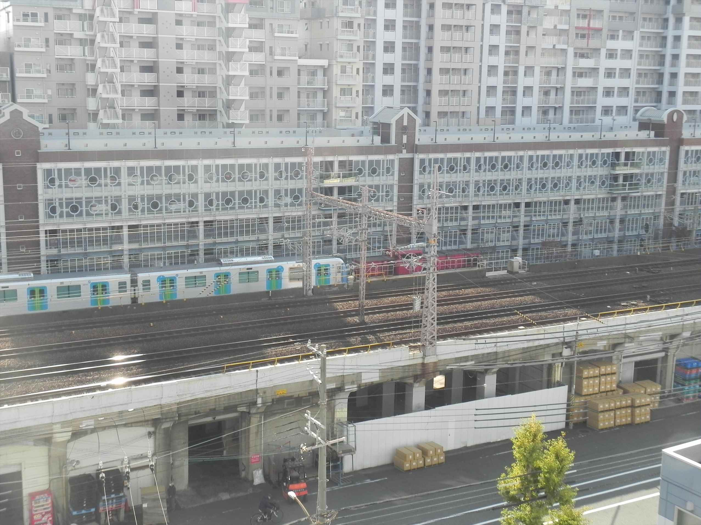

２０２４年１２月６日（金）
一番盛り上がる、川崎重工からの落成車両の回送シ
ーン
西武車？東武車？
和田岬線の回送線を通って、一旦鷹取に引き上げて
から、本線を回送されていくようです。
２０２４年１２月１０日（火）
川崎重工から和田岬線を通って兵庫駅に到着。
福岡市営地下鉄っぽいです。
２０２５年２月１１日（火）
春の改正でなくなった、新鶴見のＥＦ６５牽引貨物
です。
２０２５年５月２３日（金）
朝の上りの「らくらくはりま」
わかりにくいですが、前が青帯後ろが赤帯で面白い
組み合わせです。
２０２５年５月３０日（金）
川崎重工から和田岬線を通って兵庫駅に到着。
営団地下鉄っすね。
調べてみると、南北線の中間車両増結分みたいです。
尼ヲタさん、ピンときますか？


その後ようやく初めて回送車両の東上シーンを撮影
出来ました！
今んとここの１回のみしか確認できてません。
２０２５年６月７日（土）
瑞風を撮ろうと構えてたら・・・かぶりました。

３日後、上りの瑞風で再チャレンジ。
２０２５年６月９日（月）
珍しく、川崎重工からＪＲ北海道の車両が。
真ん中は有料シート車やね。
２０２５年６月１０日（火）
珍しく、連日ＪＲ北海道の車両が。
東上シーン見たかったですが、なぜか営団車と同じ
時間には現れず。
送り先遠いから時刻も違うんやろか・・・
２０２５年６月１４日（土）
全然かっこよくないＥＦ６６の１００番台ですが、
定期仕業はもう無くなったとのこと。代走（みつく
にとちゃうで〜）でたまに姿を現すだけとなりまし
た。
これも時間の問題なんやろか。
２０２５年６月１６日（月）
川崎重工から和田岬線を通ってやってきたEF210。
実はこれが一番多いです。こんだけ作ってたらそり
ゃ国鉄型もなくなるわ、って感じで。
川重からの回送があってこれが来るとガッカリっす。
２０２５年６月１９日（木）
早起きしてようやく銀河を激写！
２０２５年６月２１日（土）
「サロンカー晴れの国おかやま号」
下りしか撮れなかったのが残念・・・
ヘッドマークはなかったようです。
となると先日の「サロンカーＥＸＰＯなにわ号」の
撮影ミスは痛かった！
２０２５年６月２２日（火）
富山機関区の交流機が昼間２回走ります。